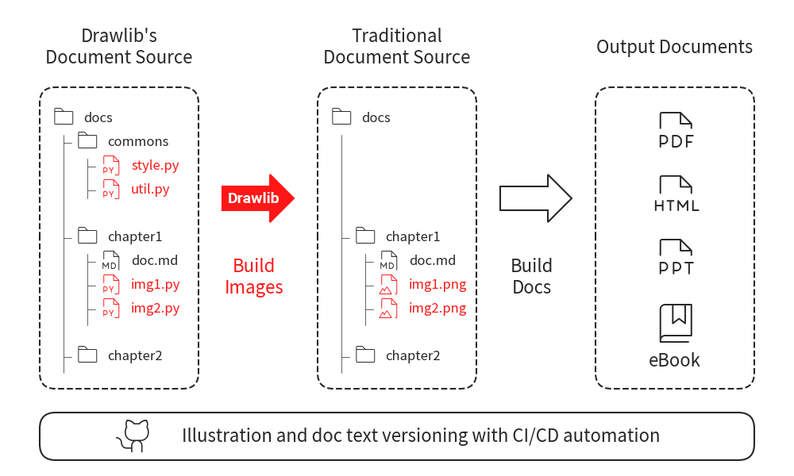

======================
Building many images
Drawlib is designed for creating numerous illustrations, such as those used in documentation.
It provides the drawlib command for bulk building images under a specified directory, allowing you to easily apply defined styles to many illustrations.
Here is a typical build process for documentation. As shown, we first build many images and then build the documentation using those images.

Build many images
In this process, Drawlib achieves the following:
- Declare Styling at Common Code Files: Centralize style definitions for consistency.
- Declare Functions at Common Code Files: Centralize function definitions for reuse.
- Import Common Code in Each Image File: Each image script imports the common styles and functions.
- Execute All Image Scripts in a Specified Directory: Generate all images by executing the scripts in the specified directory.
The Most Important Things
When building many images with Drawlib, keep these key points in mind:
- Create a Normal Python Package Architecture: Ensure your project is structured as a standard Python package.
- Include
__init__.pyin Each Directory: This file is essential for Python to recognize directories as packages. - Use the
drawlib <target>Command: Instead of usingpython <code-file>, utilize the drawlib command for building images in your package.
We use the normal Python import statement to reference style code from the image code.
This requires a correct package structure for the image code to locate the style code.
If your package has issues, the image code will show an import error.
The drawlib command simplifies complex tasks as long as the package structure is correct.
Sample Package Architecture: Flat
We recommend a flat architecture for a single document.
docs
├── __init__.py
├── doc.md
├── image1.py
├── ...
└── image<n>.py
Sample Package Architecture: Grouped
If you are writing extensive documentation, such as a book, a single directory might not be sufficient. In such cases, categorizing content into subdirectories is recommended.
Here is a sample architecture:
docs
├── __init__.py
├── chap01
│ ├── __init__.py
│ ├── image1.py
│ ├── image2.py
├── chap02
│ ├── __init__.py
│ └── image1.py
└── commons
├── __init__.py
├── avenger
│ ├── readme.txt
│ └── regular.ttf
├── images
│ ├── linux.png
│ └── python.png
├── style.py
└── util.py
- docs: Root directory for documents.
- commons: Contains code shared by image scripts, as well as common files (e.g., fonts and images).
- chap01: Contains image scripts. Document text files, such as Markdown, might also be placed in this directory.
- chap02: Similar to chap01. Both directories have files named image1.py, which is acceptable because they are in different directories.
You can create additional subdirectories for sections as needed.
Create Drawing Project as Python Package
Image scripts depend on common code, such as styling and utility functions.
In Python, this dependency is managed using import statements.
To keep the project organized, especially when dealing with a large number of image scripts, structuring the project as a Python package is essential.
For small projects, a flat directory structure might be sufficient, with all files in one directory. However, for larger projects with hundreds of image scripts, it's smarter to organize the files into directories that reflect the documentation structure.
When your project grows, you'll need to import code from different directories. This requires setting up a package architecture and using module names for imports.
Suppose we use last grouped package architecture. Here is a code snippet of illustration code:
from drawlib.canvas import config, save
import docs.commons.style
from docs.commons import util
config(width=100, height=50)
util.draw_3circles(50, 25, 10, 5)
util.draw_logo()
save()
In this example, image1.py imports docs.commons.style and docs.commons.util:
The module nas has full package hierarchy.
This style is called Absolute import.
We recommend using absolute imports, as shown in the example above.
However, you can also use relative imports.
All directories containing Python code should have an __init__.py file.
This file is crucial for Python's package system, as it designates a directory as a package.
While newer versions of Python can handle directories without __init__.py, it is still good practice to include it for clarity and compatibility.
But, drawlib does require it.
There are no choice for having no __init__.py in your package with technical reason.
Here is a summary of the directory requirements:
- docs: Contains an
__init__.pyfile. It doesn't have Python files directly, but its subdirectories do. - docs.chap01, docs.chap02, etc.: Each contains an
__init__.pyfile. - docs.commons.images: Does not contain an
__init__.pyfile since it has no Python files. You can add one if desired.
In this setup, docs is the root package because its parent directory does not contain an __init__.py file.
If the parent directory had an __init__.py file, it would be the root package instead.
Please remember, parent directory of you package must not have __init__.py.
Background Knowledge: Python Path
The Python path is a list of directories where Python searches for modules.
You can view this list using sys.path.
$ python
Python 3.9.19 (main, May 1 2024, 23:01:19)
[Clang 15.0.0 (clang-1500.3.9.4)] on darwin
Type "help", "copyright", "credits" or "license" for more information.
>>> import sys
>>> import pprint
>>> pprint.pprint(sys.path)
['',
'/Users/yuichi/.pyenv/versions/3.9.19/lib/python39.zip',
'/Users/yuichi/.pyenv/versions/3.9.19/lib/python3.9',
'/Users/yuichi/.pyenv/versions/3.9.19/lib/python3.9/lib-dynload',
'/Users/yuichi/.pyenv/versions/3.9.19/lib/python3.9/site-packages']
When you try to import packages and modules in your code, Python searches for them in the directories listed in the Python path. The Python path includes:
- The current working directory
- The directory where Python is installed
- The directory containing external packages installed via pip or other package managers
When you run your code using the drawlib command, drawlib adds your package to the Python path. This ensures that your image code can find the style code within your package.
Using the drawlib Command
Let's try running docs.chap01.image1.py normally:
$ python docs/chap01/image1.py
Traceback (most recent call last):
File "/Users/yuichi/GitHub/drawlib_docs/v0_1/samples/build_many/docs/chap01/image1.py", line 3, in <module>
import docs.commons.style
ModuleNotFoundError: No module named 'docs'
As mentioned earlier, this error occurs because Python cannot find the docs package.
Drawlib can execute any code in your package without complicated procedures.
Just use drawlib <target> or python -m drawlib <target>.
Let's try:
$ drawlib docs/chap01/image1.py
Detect package root "/Users/yuichi/GitHub/drawlib_docs/v0_1/samples/build_many/docs".
- Add parent directory of package root "/Users/yuichi/GitHub/drawlib_docs/v0_1/samples/build_many" to Python Path.
Execute python files
- /Users/yuichi/GitHub/drawlib_docs/v0_1/samples/build_many/docs/chap01/image1.py
As shown in the console, Drawlib detects the package root and adds it to the Python path.
This allows the Python illustration code to import style code from anywhere within the Python path.
__init__.py is used for detecting root of your package.
This is the reason why you must need to put __init__.py in your package.
The drawlib command can also execute all Python files in a directory:
$ drawlib docs/
Detect package root "/Users/yuichi/GitHub/drawlib_docs/v0_1/samples/build_many/docs".
- Add parent directory of package root "/Users/yuichi/GitHub/drawlib_docs/v0_1/samples/build_many" to Python Path.
Execute python files
- /Users/yuichi/GitHub/drawlib_docs/v0_1/samples/build_many/docs/__init__.py
- /Users/yuichi/GitHub/drawlib_docs/v0_1/samples/build_many/docs/chap01/__init__.py
- /Users/yuichi/GitHub/drawlib_docs/v0_1/samples/build_many/docs/chap01/image1.py
- /Users/yuichi/GitHub/drawlib_docs/v0_1/samples/build_many/docs/chap01/image2.py
- /Users/yuichi/GitHub/drawlib_docs/v0_1/samples/build_many/docs/chap02/__init__.py
- /Users/yuichi/GitHub/drawlib_docs/v0_1/samples/build_many/docs/chap02/image1.py
- /Users/yuichi/GitHub/drawlib_docs/v0_1/samples/build_many/docs/commons/__init__.py
- /Users/yuichi/GitHub/drawlib_docs/v0_1/samples/build_many/docs/commons/style.py
- /Users/yuichi/GitHub/drawlib_docs/v0_1/samples/build_many/docs/commons/util.py
The order of execution is not critical if each illustration code is independent. However, the execution follows these rules:
- Shallow directories are executed before deep directories.
- If the directory levels are the same, files are executed in alphabetical order.
By default, the clear() function, which resets the current canvas, is automatically invoked between each file execution. You can customize this behavior using options.
Sample Codes and Their Outputs
Below, we present example codes alongside their corresponding output images.
from drawlib._core.l2_models_._dimage import Dimage
img_linux = Dimage("images/linux.png")
img_python = Dimage("images/python.png")
from drawlib.colors import Colors140
from drawlib.shapes import circle, rectangle
from drawlib.text import text
from drawlib.types import Style
import docs.commons.style
def draw_3circles(x: float, y: float, radius: float, margin: float) -> None:
x_shift = 2 * radius + margin
circle((x - x_shift, y), radius)
circle((x, y), radius)
circle((x + x_shift, y), radius)
def draw_3rectangle(x: float, y: float, width: float, height: float, margin: float) -> None:
x_shift = width + margin
rectangle((x - x_shift, y), width, height, style="flat")
rectangle((x, y), width, height, style="flat")
rectangle((x + x_shift, y), width, height, style="flat")
def draw_logo(x: float = 15, y: float = 5):
text(
(x, y),
text="Drawlib",
style=Style(
text_color=Colors140.BlueViolet,
text_size=24,
text_font=FontFile("avenger/regular.ttf"),
),
)
from drawlib.canvas import config, save
import docs.commons.style
from docs.commons import util
config(width=100, height=50)
util.draw_3circles(50, 25, 10, 5)
util.draw_logo()
save()
output image of docs/chap01/image1.py
from drawlib.canvas import config, save
import docs.commons.style
from docs.commons import util
config(width=100, height=50)
util.draw_3rectangle(50, 25, 20, 15, 5)
util.draw_logo()
save()
output image of docs/chap01/image2.py
from drawlib._core.l2_models_._dimage import Dimage
from drawlib.canvas import config, save
from drawlib.images import image
import docs.commons.style
from docs.commons import util
config(width=100, height=50)
image((25, 25), width=25, image="images/linux.png")
image((75, 25), width=25, image="images/python.png")
util.draw_logo()
save()
output image of doc/schap02/image1.py
© 2026 drawlib by Yuichi Ito. Released under the Apache 2.0 License.